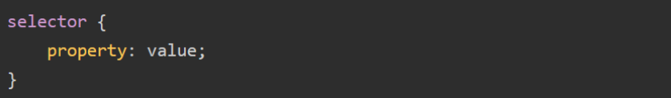
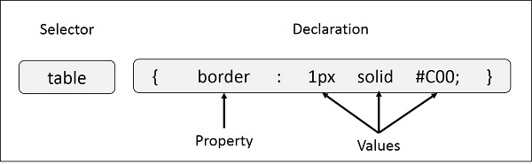
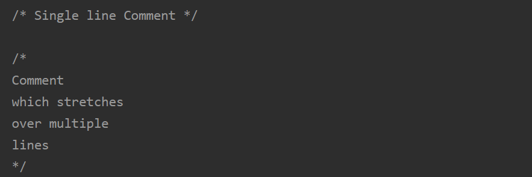
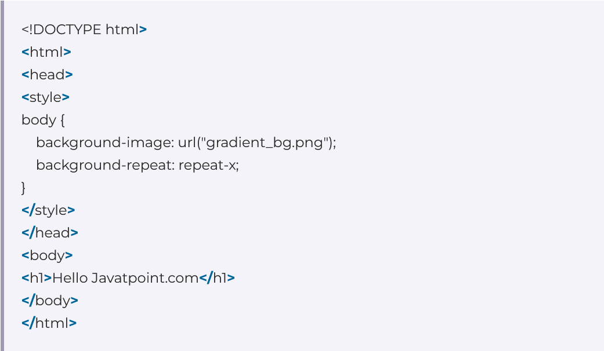

What is CSS?
CSS, or Cascading Style Sheets, is a language used to style and enhance websites. It controls how HTML elements—such as text, images, and buttons—are displayed on a webpage. With CSS, you can adjust font sizes and colors, add backgrounds, and manage the layout, transforming a basic webpage into a visually appealing and user-friendly experience. CSS also simplifies layout management across multiple web pages by using external stylesheets stored in CSS files.
HTML uses tags and CSS uses rulesets. CSS styles are applied to the HTML element using selectors. CSS is easy to learn and understand, but it provides powerful control over the presentation of an HTML document.
Prerequisites to Learn CSS
Before start learning CSS, it is essential to have a basic understanding of HTML or any markup language and familiar with computer, and basic working knowledge with files or directory.
If you are new to HTML and XHTML, then we would suggest you to go through our HTML or XHTML Tutorial first.
Different Ways to Use CSS
CSS has three ways to style the HTML:
- Inline CSS: Inline CSS are directly applied on the HTML elements and it is the most prioritize CSS amonth these three. This will override any external or internal CSS.
-
Internal CSS:
Internal CSS are defined in the HTML head
section inside of
styletag to let the browser know where to look for the CSS. -
External CSS:
External CSS are defined in a separate file
that contains only CSS properties, this is the recomended way to use CSS when you are
working on projects. It is easy to maintain
and multiple CSS files can be created and you can use them by improting it into your HTML
document using HTML
linktag.
CSS Syntax
Following is the syntax of styling using CSS:
- Selector: CSS selectors are used to select the HTML element or groups of elements you want to style on a web page.
- Property: A CSS property is an aspect or characteristic of an HTML element that can be styled or modified using CSS, such as color, font-size, or margin.
- Value: Values are assigned to properties. For example, color property can have value like red, green etc.
For Example:

CSS Selectors
CSS selectors target the HTML elements on your pages, allowing you to add styles based on their ID, class, type, attribute, and more. This guide will help you to understand the intricacies of CSS selectors and their important role in enhancing the user experience of your web pages. Understanding these selectors—such as the universal selector, attribute selector, pseudo-class selector, and combinator selectors—enables more efficient and dynamic web design.
Types of CSS Selectors
CSS Comments
Comments can be used to explain your CSS code, give other developers or yourself context, and temporarily turn off specific pieces of code without completely removing them. They start with /* and end with */ and can be used for both single-line and multi-line comments.
Comments are ignored by browsers, so they won’t affect how your webpage looks or works. Comments can be added anywhere in the code, and they can span across multiple lines. It’s a good practice to add comments to clarify complex parts of your code for future reference or collaboration.
For Example:

CSS Background
The background property of CSS is used to set the background of an element. It can be used to apply a single background image or multiple background images. The CSS background property is a shorthand for setting multiple background properties in one declaration, including background color, image, position, size, repeat, origin, clip, and attachment. This property is essential for customizing the visual appearance of elements.
CSS Background syntax
background = background-color | bg-image | bg-position / bg-size | repeat-style | attachment | box;
For Example:

| Background Property | Description |
|---|---|
| Background-color Property | The background-color property in CSS is used to specify the background color of an element. |
| CSS Background-image Property | The background-image property is used to set one or more background images to an element. |
| CSS Background-repeat Property | The background-repeat property in CSS is used to repeat the background image both horizontally and vertically. |
| CSS Background-attachment Property | The background-attachment property in CSS is used to specify the kind of attachment of the background image with respect to its container. |
| CSS Background-position Property | In CSS body-position property is mainly used to set an image at a certain position. |
| CSS Background-origin Property | The background-origin is a property defined in CSS which helps in adjusting the background image of the webpage. |
| CSS Background-clip Property | The background-clip property in CSS is used to define how to extend the background (color or image) within an element. |
Reference
All the documentation in this page is taken from the following sites: